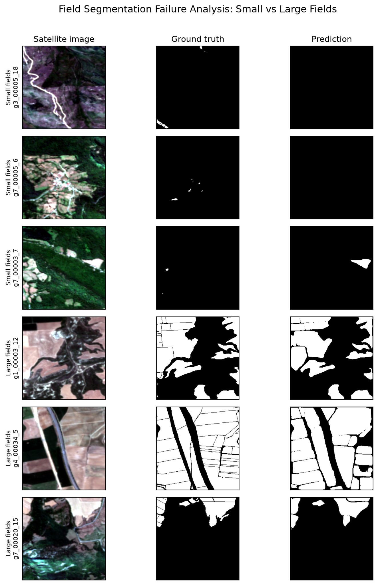

Selected work / GeoAI / Spain · 2026
Field Instance Segmentation in Spain
How does agricultural field morphology relate to the performance of an instance-segmentation model?
The finding
Field size mattered in this test set.
Tiles with larger median fields tended to have higher segmentation overlap. Mean IoU increased from 0.317 in the smallest-field quartile to 0.573 in the largest.
The relationship is an observed association within the Spain test set, not evidence that field size alone caused the difference.
From imagery to prediction
A closer look at small and large fields.
Satellite imagery, reference masks and model predictions shown side by side for selected Spain tiles.

01 / Approach
A focused baseline, then a closer look.
I used the Spain subset of Fields of the World and four-band Sentinel-2 imagery (RGB and near infrared). A Mask R-CNN model with a ResNet-50 FPN backbone was trained as a three-epoch, compute-conscious baseline.
Performance was measured on 216 held-out tiles. For the morphology analysis, 197 valid tiles were used to compare median field area with tile-level IoU and field-size quartiles.
Spain subset Instance masks Mask R-CNN Held-out evaluation Morphology analysis
02 / Evaluation
Held-out test results
Reported across 216 independent test tiles.
- Mean IoU
- 0.4938
- Median IoU
- 0.5122
- Precision
- 0.8321
- Recall
- 0.5115
- F1 / Dice
- 0.6551
03 / Interpretation
What the numbers can—and cannot—say.
The model found some fields reliably, yet recall was lower than precision. The quartile comparison suggests that smaller-field landscapes were more difficult for this baseline to segment in the held-out sample.
This is a single-country, three-epoch baseline. The field-size pattern does not establish causation or performance in other countries. More training and broader evaluation would be needed before making either claim.
See code and full analysis